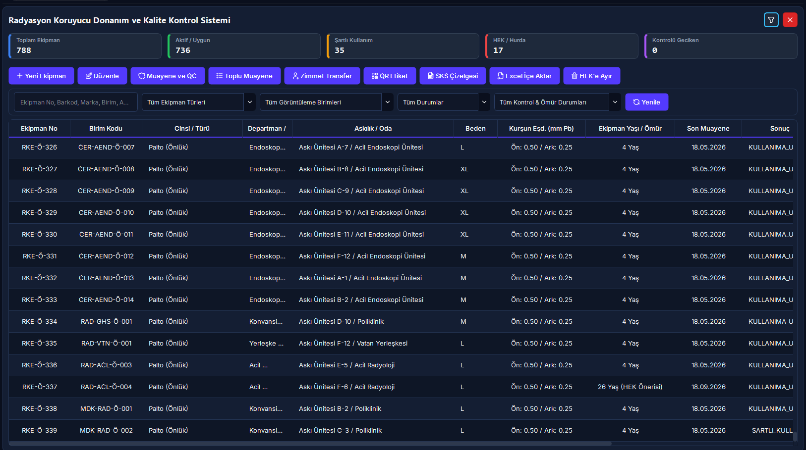

20. Radyasyon Koruyucu Ekipman (RKE) & DIN 6857 Kalite Kontrol Yönetimi
Radyoloji, nükleer tıp, kardiyoloji ve skopi ameliyathanelerinde kullanılan kurşun önlük, palto, etek-yelek, tiroid ve gonad koruyucularının yaşam döngüsünü, akıllı kodlamasını, fiziksel kontrollerini, skopi altındaki interaktif delik/çatlak krokisini, matematiksel karar motorunu ve Sağlık Bakanlığı SKS 6.1 resmi denetim çizelgelerini yönetin.
Vizyonder Hızlı Operasyon Reçetesi (20 Saniye Kuralı)
Teknik destek aramadan periyodik muayene sonucunu belirleme ve onaylama formülü
Kurşun önlüğün yıllık kontrolünü DIN 6857-1 standardına uygun olarak kesinleştirmek ve SKS çizelgesine işlemek.
Tablodan ekipmanı seçin ➔ [Muayene ve QC] butonuna basın ➔ Skopi modunda radyografideki delikleri vücut krokisine tıklayarak işaretleyin veya kusursuzsa [1-Tıkla Kusursuz / Uygun Onayla] butonuna basın.
Sistem hasar alanını otomatik hesaplar; kritik bölgede delik yoksa ve toplam alan 5{mm}^2 ise geçerlilik süresini 1 yıl uzatır. Hurda veya kayıp önlüklerin zimmet transferini güvenlik kilidiyle engeller.
5N1K Kural ve Ayar Çözümleme Tablosu
Aşağıdaki tablo, koruyucu donanım yönetiminde kullanılan tüm operasyonel fonksiyonları, kısıtları, formülleri ve yetki sınırlarını teknik kod karmaşası olmaksızın açıklar:
Klinik Radyasyon Güvenliği & Mit Avcısı (Kritik Kurallar)
"Önlükte delik yok, dikişleri biraz açılmış ve kurşun katman hafif katlanmış; idare eder, ameliyatta giyilebilir."
Kurşun katmandaki blok kayması veya katlanmalar doğrudan korumasız radyasyon sızıntı koridorları açar. DIN 6857-1 standardı uyarınca kurşun blok katlanması veya blok kayması tespit edilen tüm koruyucular derhal HEK / Hurdaya ayrılmalıdır.
"10 yılı dolduran önlükler skopide kusursuz ve deliksiz çıksa bile sistem tarafından zorla çöpe atılır."
RADPYS'teki 10+ yıl uyarısı uluslararası malzeme yorulması ilkelerine dayalı bir Öneri & Dikkat Uyarısıdır. Skopi testinde deliksiz ve homojen olduğu kanıtlanan önlükler, kurum hekiminin ve medikal fizikçinin onayıyla hassas takip altında kullanılabilir.
"'Şartlı Kullanım' kararı alan önlüğü anjiyoda veya skopi eşliğindeki ortopedi cerrahisinde giyebiliriz."
Şartlı donanımlar (5-15 mm² delik veya toka hasarı olanlar) primer ışınlama konisi altında asla kullanılamaz. Bu önlükler yalnızca hasta yakını veya düşük saçılmalı refakatçi işlemlerinde kullanılmak üzere ayrı sarı askılıkta tutulmalıdır.
Çift Modlu Muayene ve Karar İş Akış Şeması
DIN 6857-1 / IEC 61331 Karar Motoru & Eşik Değerleri
RADPYS V4, skopi veya röntgen şutlaması altında yapılan kalite kontrol muayenelerinde medikal fizikçinin sübjektif değerlendirmesini ortadan kaldıran matematiksel bir karar motoru barındırır. Dokunmatik SVG tuvali üzerinde işaretlenen her deliğin çapı ($d$) girildiğinde sistem daire alan formülüyle hasar büyüklüğünü hesaplar:
- • Toplam hasar alanı $\le 5.0\text{ mm}^2$.
- • Kritik organ bölgesinde delik/çatlak YOK.
- • Kurşun blok katlanması veya kayması YOK.
- • Tüm klinik ve ameliyathanelerde serbest kullanım.
- • Toplam hasar alanı $5.0 - 15.0\text{ mm}^2$ aralığında.
- • Veya dikiş/toka açılması mevcut.
- • Primer ışınlama alanında (Anjiyo, C-Kollu Skopi) YASAK.
- • Yalnızca hasta refakati ve düşük dozlu alanlarda.
- • Kritik organ bölgesinde $> 0\text{ mm}^2$ delik (Sıfır Tolerans).
- • Non-kritik alanda toplam hasar $> 15.0\text{ mm}^2$.
- • Kurşun blok katlanması veya blok kayması.
- • Önlük derhal klinikten çekilir ve imhaya sevk edilir.
Toplu Muayene Kokpiti & Zimmet Güvenlik Kilidi
1 Toplu Kalite Kontrol Kokpiti ([Toplu Muayene])
Hastanede 100'den fazla kurşun önlük bulunan merkezlerde her ekipman için ayrı form açıp kaydetmek saatler sürebilir. [Toplu Muayene] butonu ile:
- Gecikenleri Seç: Muayene tarihi yaklaşan veya günü geçen önlükleri tek tıkla otomatik işaretler.
- Tek Tıkla Toplu İşlem: Skopi cihazı, kontrol tarihi ve "Kullanıma Uygun" kararı seçilerek onlarca ekipmanın muayenesi tek tuşla sisteme işlenir.
2 Hurda Devir Güvenlik Kilidi ([Zimmet Transfer])
Koruyucu donanımlar personelin şahsına zimmetlenebildiği gibi birim ortak askılıklarına da atanabilir. Ancak hurda donanımların yanlışlıkla kullanıma sokulmasını engelleyen katı bir emniyet kilidi mevcuttur:
HEK_Hurda, Kayip veya Kullanim_Disi olan bir ekipman
seçilip transfer yapılmak istendiğinde sistem transferi engeller ve kaydetme butonunu kilitler.
Karekod (QR) Pasaport Etiketi & Mobil Saha Muayenesi
Her Önlüğe Benzersiz Dijital Pasaport
[QR Etiket] butonuna tıklandığında önlüğün teknik künyesini (Önlük No, Cinsi, Kurşun Eşdeğeri mm Pb, Beden, Konum, Son Muayene Sonucu) içeren kurumsal bir etiket üretilir.
- • Yazdır: Doğrudan klinik etiket yazıcısına gönderilir (Suya ve dezenfektana dayanıklı kumaş etiketler tavsiye edilir).
- • PNG Olarak Kaydet: Yüksek çözünürlüklü dijital görsel olarak arşivlenir.
- • Mobil Saha Muayenesi: Sahada çalışan medikal fizikçi cep telefonu veya tablet kamerasıyla önlükteki QR kodu tarattığında web portal açılır; cihaz başından ayrılmadan dokunmatik kroki üzerinde delikleri işaretleyip canlı kamera fotoğrafı ekleyerek testi onaylayabilir.
Arayüz Rehberi & Ekran Görünümleri

Görsel: RKE Ana Yönetim ve KPI EkranıKonum: assets/img/20_rke_ana_yonetim.png